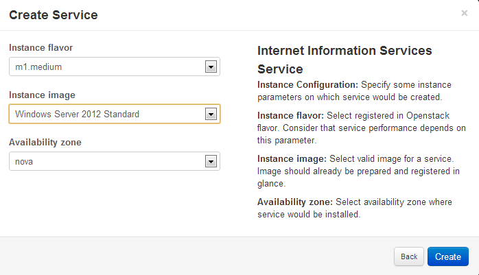

After Environment is created, you need to add applications to
this environment
and then send the environment to deploy. When deploy process is
done instances
with your applications will be spawned in OpenStack.
To add an application, navigate to the page with the list of
environment components by
clicking on the environment name (or on the "Components"
button) and then, click
the
"Add Application"button.
After that, you will be redirected to the "Applications" page. Here you can see all applications: tenant applications and public applications. (Information about how to upload your own application package to repository is available in appropriate chapter.) Base Murano public applications are described below.
Once you choose application that you want to add click "Add to Env" and fill the form. Forms for each application are specific. To see more information about filling the form for a specific application follow one of the link below:
ASP.NET Application: is a server-side Web application framework designed for Web development to produce dynamic Web pages. Application is able to install custom services onto one IIS Web Server. Murano installs all needed components and makes proper configuration.
ASP.NET Farm Application: ASP.NET Farm Application installs a custom application on a load-balanced array of IIS servers.
Active Directory: Active Directory is a directory application implemented by Microsoft for Windows domain networks. In one installation, in addition to primary Domain Controller, you can add optional count of secondary Domain Controllers. Any other applications you are intending to create can be joined to that domain.
Apache Application: Apache HTTP Server is a web server application notable for playing a key role in the initial growth of the World Wide Web. This application can install Apache with PHP module or without it.
Apache Tomcat: Apache Tomcat is an open source software implementation of the Java Servlet and JavaServer Pages technologies.
Demo Application: Installs test application that demonstrates how to Murano interconnects with Murano Demo Agent. For this application light-weight Linux Cirros image can be used.
Internet Information Application: IIS is a web server and a set of feature extension modules.
Internet Information Web Farm Application: Murano installs the Web Farm Framework on the controller server, configures the primary server and prepares the secondary servers. In addition load balancer is installed to monitor application statuses.
Linux Telnet: "AD Telnet - is a network protocol used to provide a bidirectional interactive text-oriented communication facility using a virtual terminal connection.
MS SQL Application: Microsoft SQL Application is a relational database management system.
MS SQL Server Failover Cluster: Murano installs all needed components and configures your SQL Server Cluster the way you want.
PostgreSQL: PostgreSQL, often simply "Postgres", is an object-relational database management system with an emphasis on extensibility and standards-compliance.
On the last step of creating application prototype you have opportunity to set the hardware flavor of the instance which will be created - and the image with the operating system, which will be installed on the instance. Also you may select availability zone, if there are more then one in your environment.
|  |